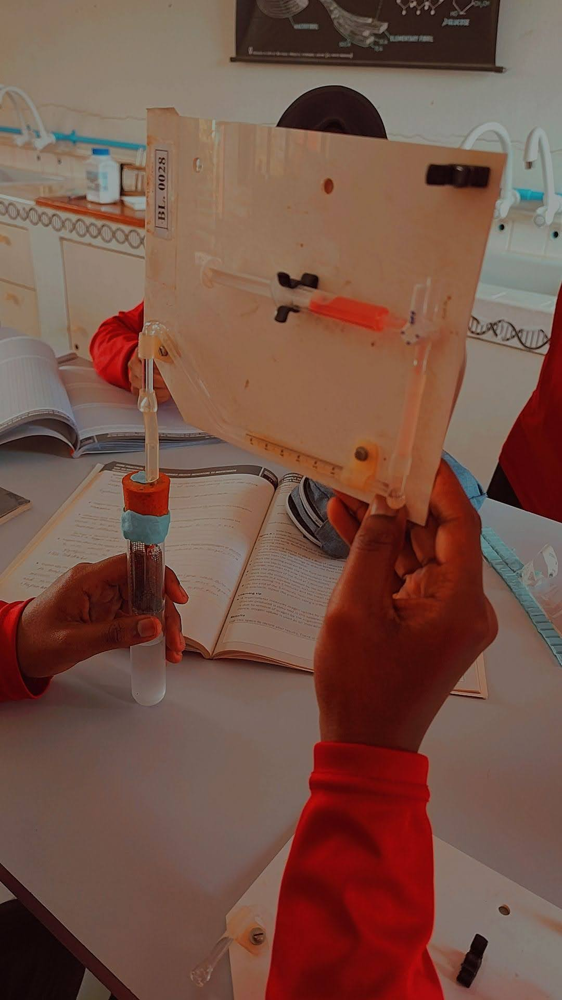

For the biology practicals, we had to yoink some hirundhu dhooni and then basically tourture them in a respiroometer. There were pregant ones, conjoined ones, ones that were mating, all of the "ethical issues" we learn during theory tests went out the window when this practical rolled around.
We barely knew if they were breathing.